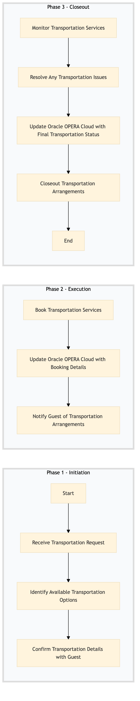

| Role | Steps |
|---|---|
| Front Desk Agent | 1.1 1.3 3.3 |
| Concierge | 1.2 2.1 2.3 3.1 3.2 |
| Revenue Manager | 2.2 3.3 |
| Step | Name | Role | System | Input | Output | KPI | Dec? | Exc? | Pain Point / Risk |
|---|---|---|---|---|---|---|---|---|---|
| 1.1 | Receive Transportation Request | Front Desk Agent | Oracle OPERA Cloud | Guest request form or verbal communication | Transportation request logged in Oracle OPERA Cloud | Less than 2 minutes | N | Y | Handling last-minute requests with limited availability |
| 1.2 | Identify Available Transportation Options | Concierge | Oracle OPERA Cloud, SynXis CRS | Transportation request details from Oracle OPERA Cloud | List of available transportation options | Less than 5 minutes | N | Y | Accurate real-time availability data across multiple systems |
| 1.3 | Confirm Transportation Details with Guest | Front Desk Agent, Concierge | Oracle OPERA Cloud, Marriott Bonvoy CRM | List of available transportation options | Confirmed transportation details | Less than 3 minutes | Y | N | Handling guest preferences and special requirements |
| 2.1 | Book Transportation Services | Concierge, Revenue Manager | SynXis CRS, Oracle OPERA Cloud | Confirmed transportation details | Transportation booking confirmation | Less than 10 minutes | N | Y | Integrating multiple booking systems for seamless transactions |
| 2.2 | Update Oracle OPERA Cloud with Booking Details | Revenue Manager, Concierge | Oracle OPERA Cloud | Transportation booking confirmation | Updated guest profile in Oracle OPERA Cloud | Less than 2 minutes | N | Y | Ensuring data consistency across systems |
| 2.3 | Notify Guest of Transportation Arrangements | Front Desk Agent, Concierge | Oracle OPERA Cloud, Marriott Bonvoy CRM | Updated guest profile in Oracle OPERA Cloud | Guest notification via email or phone | Less than 1 minute | N | Y | Effective communication with guests regarding their transportation arrangements |
| 3.1 | Monitor Transportation Services | Concierge, Front Desk Agent | Oracle OPERA Cloud, SynXis CRS | Guest check-in/check-out status | Transportation service status update | Less than 5 minutes every hour | Y | N | Real-time monitoring of transportation services |
| 3.2 | Resolve Any Transportation Issues | Concierge, Front Desk Agent | Oracle OPERA Cloud, SynXis CRS | Transportation service status update | Issue resolution and updated guest notification | Less than 10 minutes | Y | Y | Handling unexpected delays or cancellations |
| 3.3 | Update Oracle OPERA Cloud with Final Transportation Status | Revenue Manager, Concierge | Oracle OPERA Cloud | Final transportation status and resolution details | Updated guest profile in Oracle OPERA Cloud | Less than 2 minutes | N | Y | Maintaining accurate records of all transportation transactions |
| 3.4 | Closeout Transportation Arrangements | Revenue Manager, Concierge | Oracle OPERA Cloud, SynXis CRS | Final transportation status and resolution details | Closed-out transportation arrangements in Oracle OPERA Cloud | Less than 1 minute | N | Y | Ensuring all related records are properly archived |
This process outlines how a Marriott full-service hotel handles transportation and transfer arrangements for guests. It ensures smooth coordination between various departments and systems to provide efficient and personalized service.